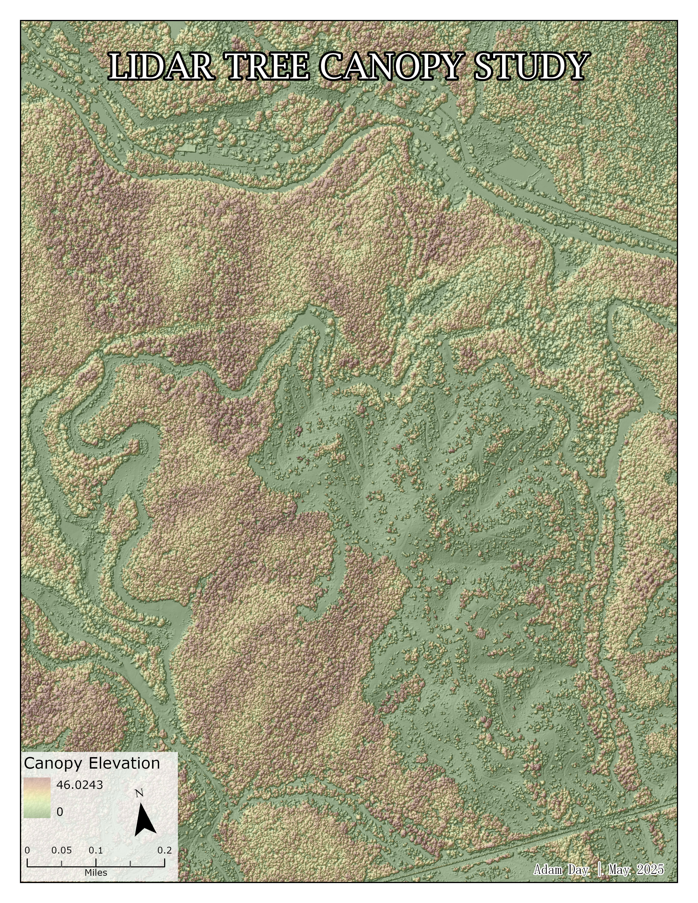
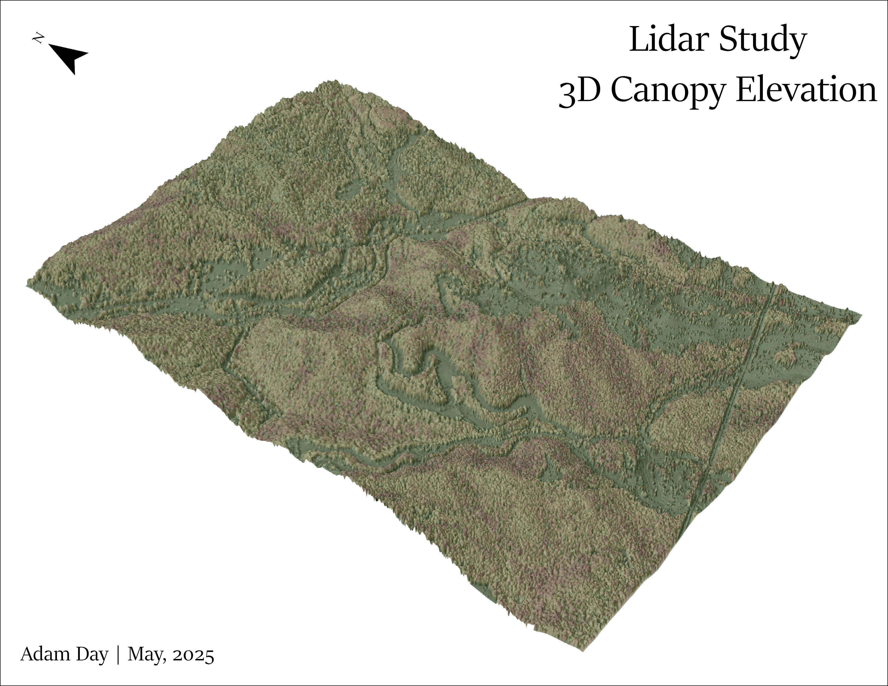
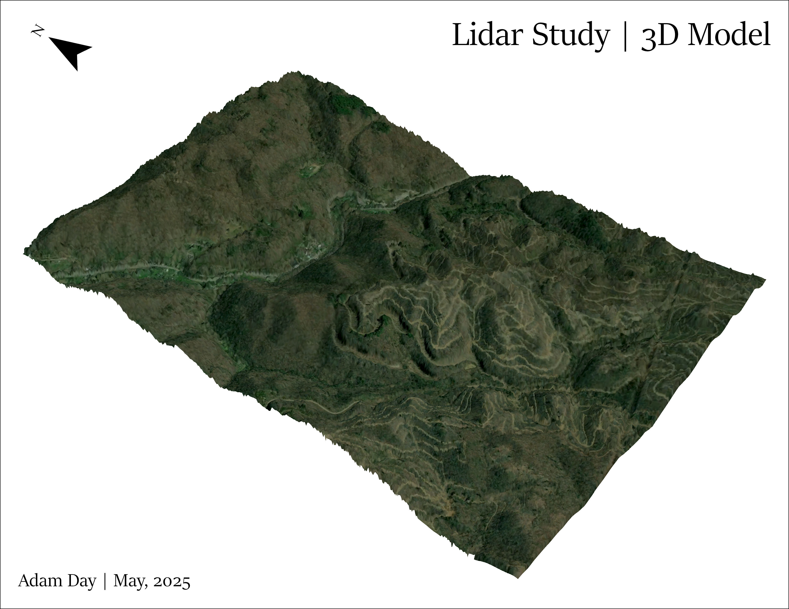

LiDAR Elevation Study
Adam Day | May, 2025
OUTLINE
This study uses LIDAR datasets, coupled with ArcGIS Pro to look at different way to visualize LIDAR data in both 2D and 3D. The project demonstrates how high-resolution elevation and surface models can be created using LiDAR data. The workflow began by converting LAZ files, which are compressed LiDAR point cloud data files, into LAS datasets, ensuring they were georeferenced correctly for spatial analysis.
After the data was loaded, the LiDAR point cloud was expolored in both 2D and 3D environments, offering a detailed view of terrain surfaes and vegetation structure. From here, a Digital Elevation Model (DEM) was generated to represent the bare earth surface. Coupled with this, a Digital Surface Model (DSM) was created to capture the tops of buildings, trees, and other above-ground features.
To better understand vegetation height, a Canopy Height Model (CHM) was created by subtracting the DEM from the DSM, showing the vertical structure of forest canopies. These elevation models were further enhanced with hillshade visualizations to emphasize terrain features through shadow and light effects.
The final outputs included both static and interactive 3D visualizations, along with cartographic 2D map layouts, showing the spatial patterns of elevation and canopy height across the study area.
Figure 1: LiDAR derived 2D Elevation Map
Figure 2: LiDAR derived 2D Canopy Map

Figure 3: LiDAR derived 3D Elevation Map
Figure 4: LiDAR derived 3D Elevation Map with Canopy
Figure 5: LiDAR derived 3D Image